Flor de Ubajay
| site | year | n | Mean | min | max | sd |
|---|---|---|---|---|---|---|
| concordia | 2019 | 120 | 27.9266667 | 10.0 | 97 | 27.5135864 |
| concordia | 2021 | 158 | 39.5526282 | 11.2 | 99 | 27.8477103 |
| concordia | 2022 | 164 | 31.7673913 | 11.0 | 98 | 29.0482764 |
| palmar | 2019 | 160 | 20.6566667 | 10.0 | 98 | 21.7186321 |
| palmar | 2021 | 170 | 51.9713415 | 10.0 | 99 | 36.1811797 |
| palmar | 2022 | 80 | 26.7100000 | 10.0 | 97 | 26.9079318 |
| gualeguaychu | 2019 | 130 | 28.3784615 | 11.0 | 97 | 26.4472298 |
| gualeguaychu | 2021 | 176 | 49.0006410 | 11.0 | 99 | 30.8377554 |
| gualeguaychu | 2022 | 180 | 25.1718116 | 10.0 | 92 | 23.2309507 |
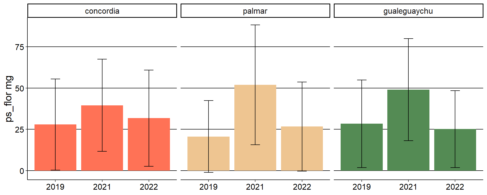
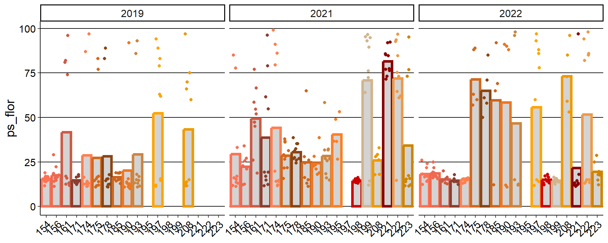
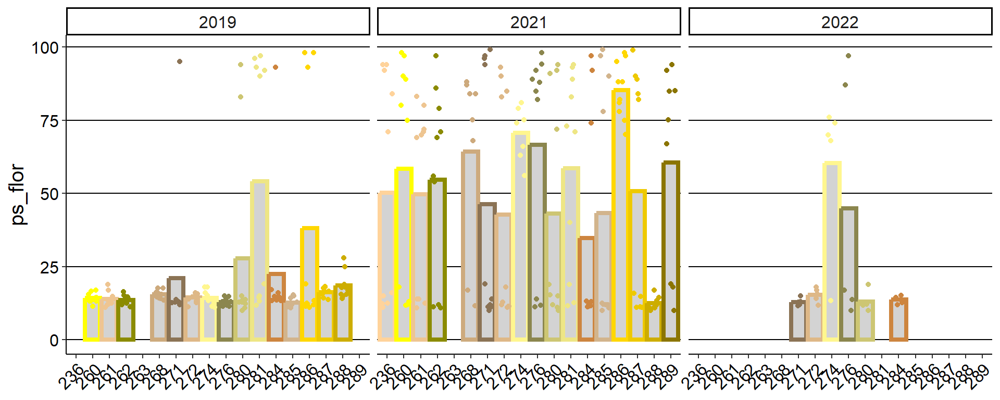
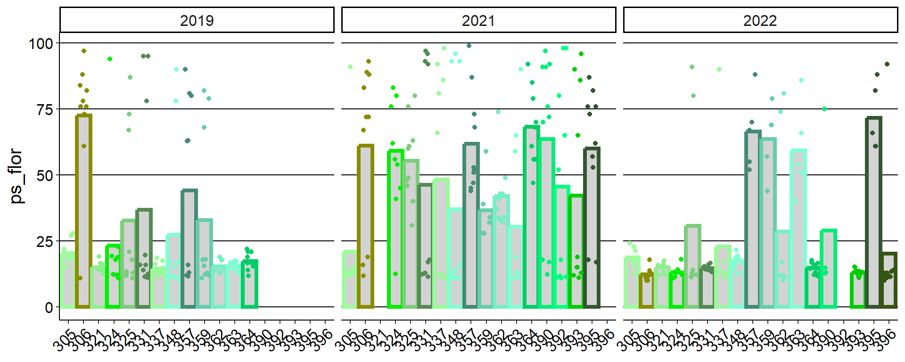
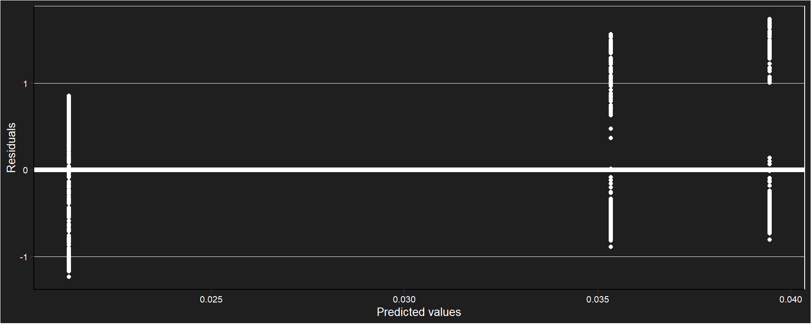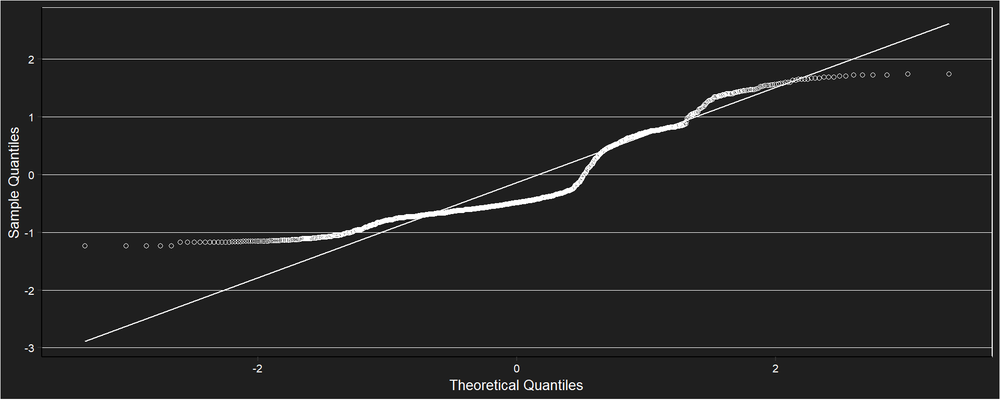
##
## Shapiro-Wilk normality test
##
## data: e
## W = 0.8805374, p-value < 2.22e-16##
## Call:
## glm(formula = (ps_flor) ~ year, family = "Gamma", data = database)
##
## Coefficients:
## Estimate Std. Error t value Pr(>|t|)
## (Intercept) 0.03945201 0.00171340 23.02562 < 2e-16 ***
## year2021 -0.01814266 0.00191193 -9.48918 < 2e-16 ***
## year2022 -0.00411269 0.00245254 -1.67691 0.093825 .
## ---
## Signif. codes: 0 '***' 0.001 '**' 0.01 '*' 0.05 '.' 0.1 ' ' 1
##
## (Dispersion parameter for Gamma family taken to be 0.754484492)
##
## Null deviance: 804.3835 on 1181 degrees of freedom
## Residual deviance: 708.7641 on 1179 degrees of freedom
## (156 observations deleted due to missingness)
## AIC: 10461.69
##
## Number of Fisher Scoring iterations: 6| site | year | n | Mean | min | max | sd |
|---|---|---|---|---|---|---|
| concordia | 2019 | 120 | 3.91666667 | 0 | 6 | 1.19932287 |
| concordia | 2021 | 106 | 4.98113207 | 0 | 8 | 1.90228500 |
| concordia | 2022 | 164 | 4.65243902 | 0 | 11 | 1.68571957 |
| palmar | 2019 | 150 | 5.00000000 | 1 | 10 | 1.45629852 |
| palmar | 2021 | 166 | 5.07831325 | 0 | 9 | 1.73026873 |
| palmar | 2022 | 80 | 5.00000000 | 2 | 9 | 1.68387738 |
| gualeguaychu | 2019 | 130 | 4.00769231 | 0 | 9 | 1.82360132 |
| gualeguaychu | 2021 | 109 | 5.00917431 | 2 | 9 | 1.54257729 |
| gualeguaychu | 2022 | 180 | 4.93081761 | 0 | 12 | 2.25612948 |
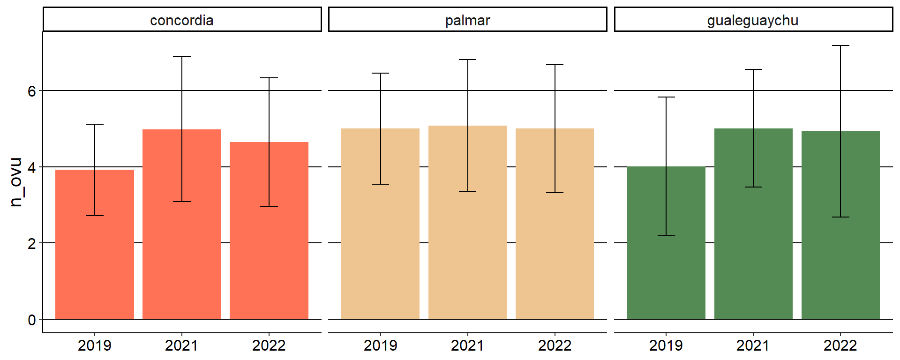
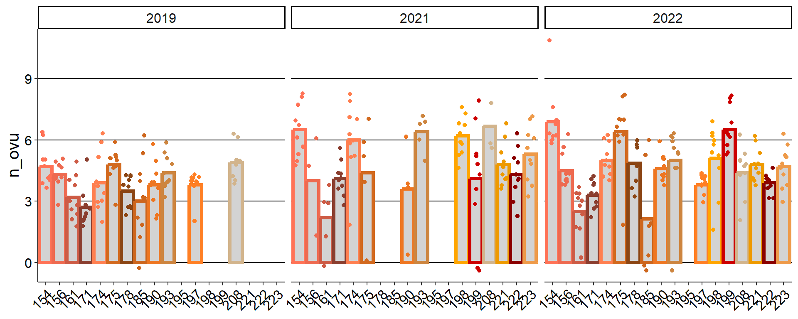
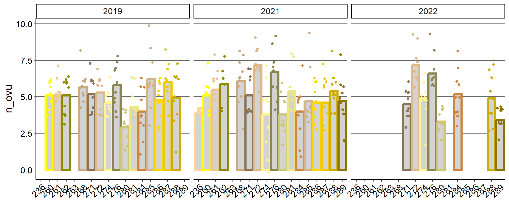
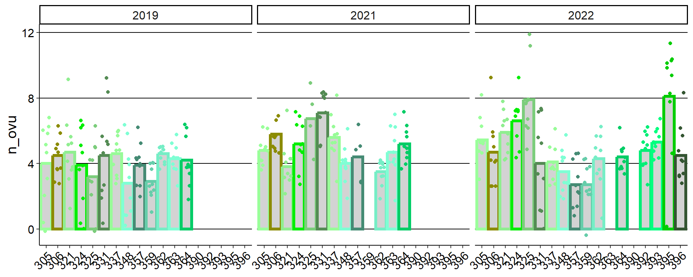
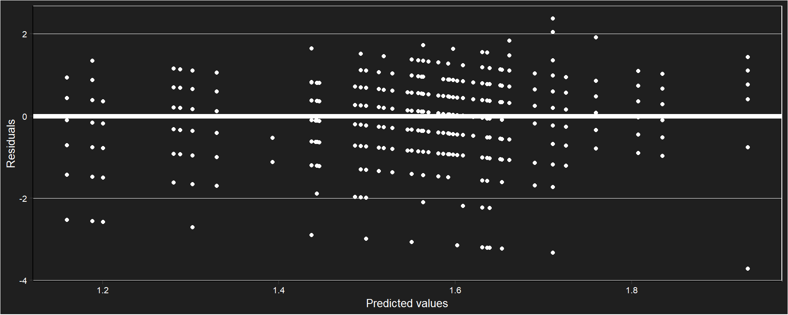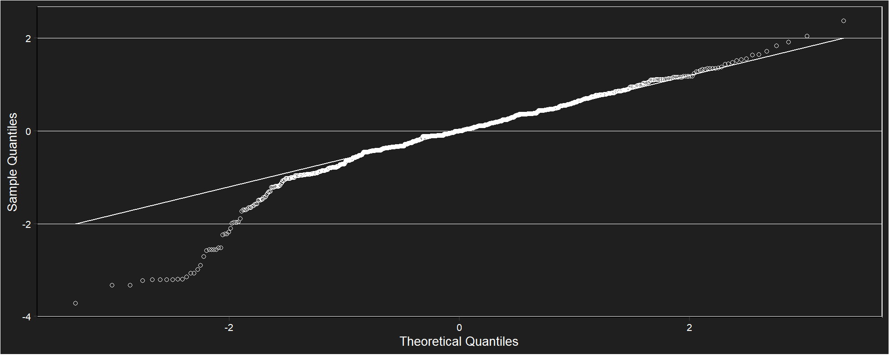
## [1] 0.433992246## Generalized linear mixed model fit by maximum likelihood (Laplace Approximation) ['glmerMod']
## Family: poisson ( log )
## Formula: n_ovu ~ (1 | site/phenotype/id)
## Data: database
## AIC BIC logLik deviance df.resid
## 4749.4725 4769.7791 -2370.7363 4741.4725 1180
## Random effects:
## Groups Name Std.Dev.
## id:(phenotype:site) (Intercept) 0.00000e+00
## phenotype:site (Intercept) 1.80563e-01
## site (Intercept) 1.57856e-05
## Number of obs: 1184, groups: id:(phenotype:site), 509; phenotype:site, 51; site, 3
## Fixed Effects:
## (Intercept)
## 1.54105
## optimizer (Nelder_Mead) convergence code: 0 (OK) ; 0 optimizer warnings; 1 lme4 warnings| site | year | n | Mean | min | max | sd |
|---|---|---|---|---|---|---|
| concordia | 2019 | 120 | 17.1375000 | 11.25 | 27.00 | 2.66037094 |
| concordia | 2021 | 158 | 21.6287879 | 14.25 | 30.00 | 3.28966448 |
| concordia | 2022 | 164 | 15.3523490 | 11.25 | 21.00 | 1.87105744 |
| palmar | 2019 | 160 | 19.5187500 | 12.00 | 29.25 | 3.25012699 |
| palmar | 2021 | 170 | 20.4754902 | 12.00 | 27.00 | 2.67677092 |
| palmar | 2022 | 80 | 14.4750000 | 11.25 | 20.25 | 1.55317152 |
| gualeguaychu | 2019 | 130 | 18.6569767 | 10.50 | 33.75 | 3.76637956 |
| gualeguaychu | 2021 | 176 | 20.9325000 | 15.00 | 26.25 | 2.39814085 |
| gualeguaychu | 2022 | 180 | 15.0200000 | 12.00 | 18.00 | 1.37099631 |
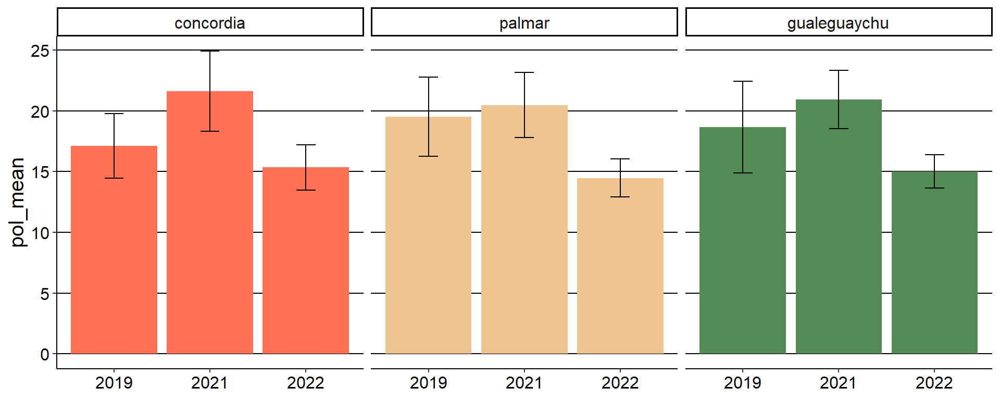
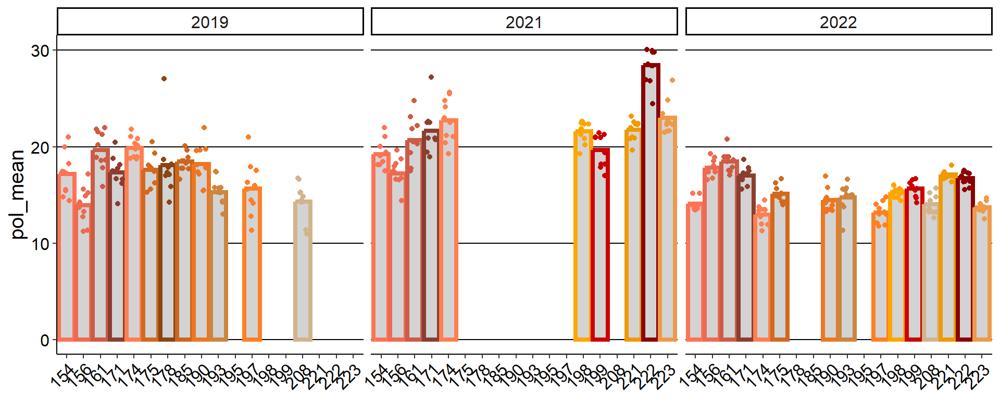
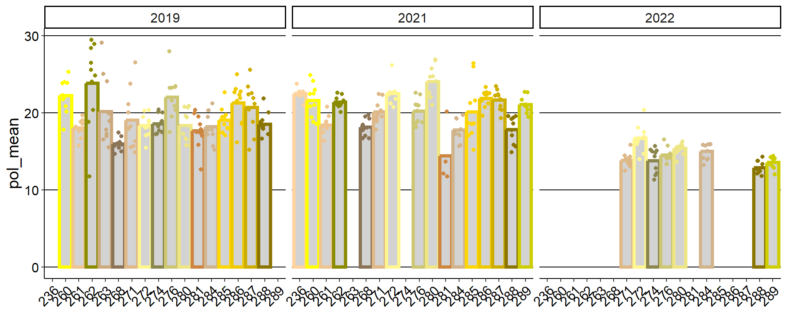
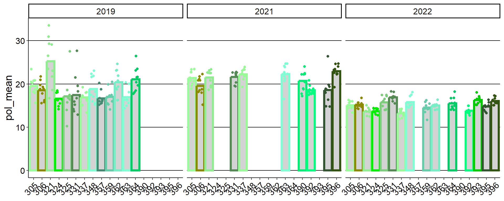
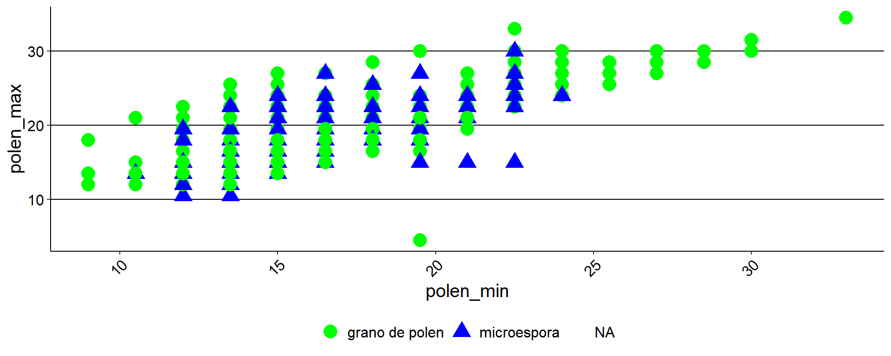
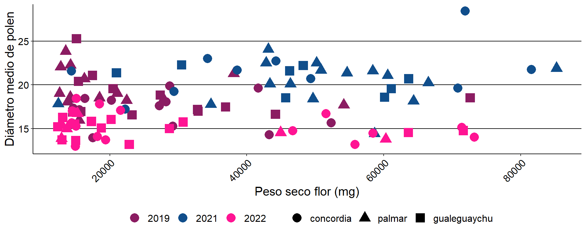
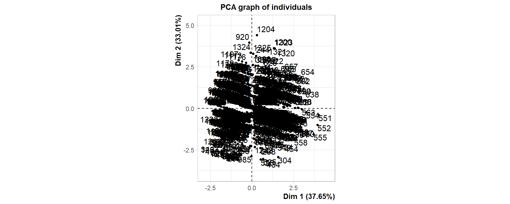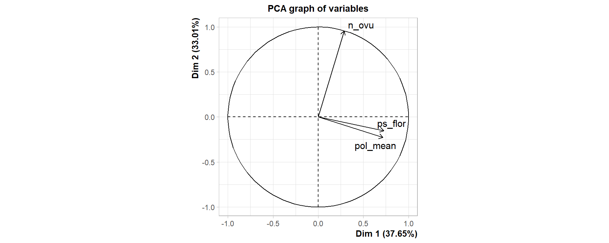
| site | n | Mean | min | max | sd |
|---|---|---|---|---|---|
| concordia | 10 | 0.117919073 | 0.000000000 | 0.473537604 | 0.146640961 |
| palmar | 14 | 0.016591549 | 0.000000000 | 0.046413502 | 0.017825472 |
| gualeguaychu | 7 | 0.022515903 | 0.001845018 | 0.115241636 | 0.041280119 |
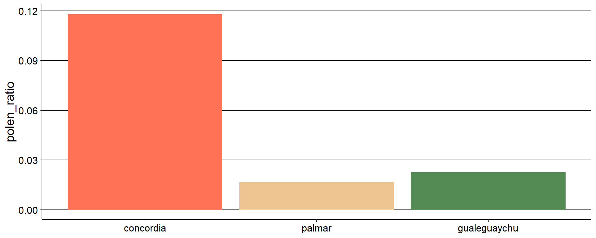
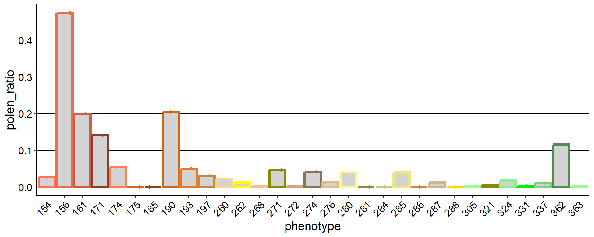